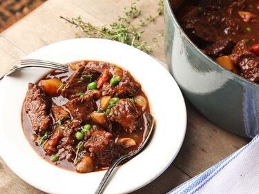
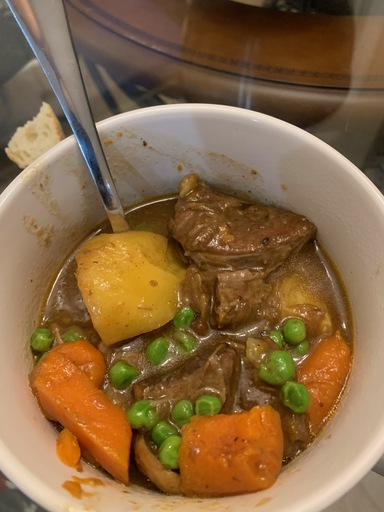

Beef Stew
Adapted from: Serious Eats

Ingredients
- 4 cups chicken stock
- 3 tablespoons tomato paste
- 1 tablespoon soy sauce
- 1 tablespoon Asian fish sauce
- 1 tablespoon Worcestershire sauce
- 2 tablespoons vegetable oil
- 3 pounds beef chuck roast
- 10 ounces white button mushroom, quartered
- 4 medium carrots, 2 chopped, 2 left whole
- 3 large yellow onions, 2 chopped, 1 halfed with skin on
- 2 small stalks celery
- 3 medium cloves garlic, unpeeled
- 1 cup grape juice
- 3 tablespoons flour
- 2 bay leaves
- 4 sprigs thyme
- 1 pound Yukon gold potatoes
- 4 ounces frozen peas
Directions
- Cut beef into 2 or 3 "steaks", season with salt and pepper then brown in dutch oven over medium high heat. Remove beef and set aside.
- Add mushrooms and cook until they start to brown. Add chopped carrots and chopped onions. Cook until well-browned and then remove all and set aside.
- Add halfed onion, whole carrots, celery sticks, and garlic. Cook until browned.
- Add grape juice and let reduce some. Add chicken stock, tomato paste, soy sauce, fish sauce, and worcestershire sauce. Bring to a simmer.
- Cut beef into chunks and then toss with flour. Add to dutch oven, then transfer to 300° oven. Cover pot with lid partially open.
- Cook for approx 90 minutes and then remove large vegetables. Add in chopped vegetables set aside before as well as cubed potatoes.
- Return to oven and replace lid as before, cook additional hour or so.
- Remove from oven and stir in frozen peas, add seasoning to taste.
Notes
-
2020-12-16 - Made this with large "pot roast chuck" from costco - came out good. Original recipe has wine instead of grape juice, and a few other annoying additional steps this skips. Not sure how much difference setting aside veggies makes vs cooking them the whole time, but they did come out good and not overly mushy. I used some open jarred marinara sauce in place of tomato paste this time and seemed to work fine - pretty small amount overall so not sure how much flavor is really added.
